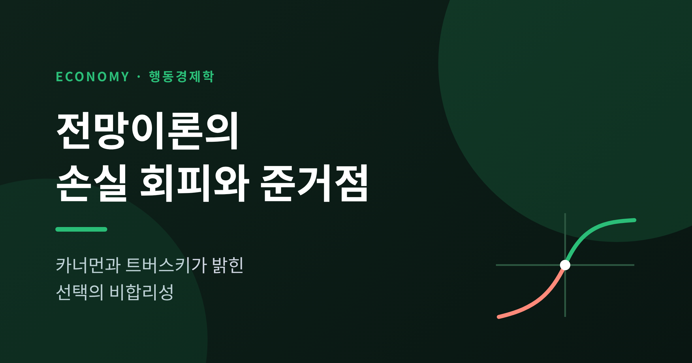
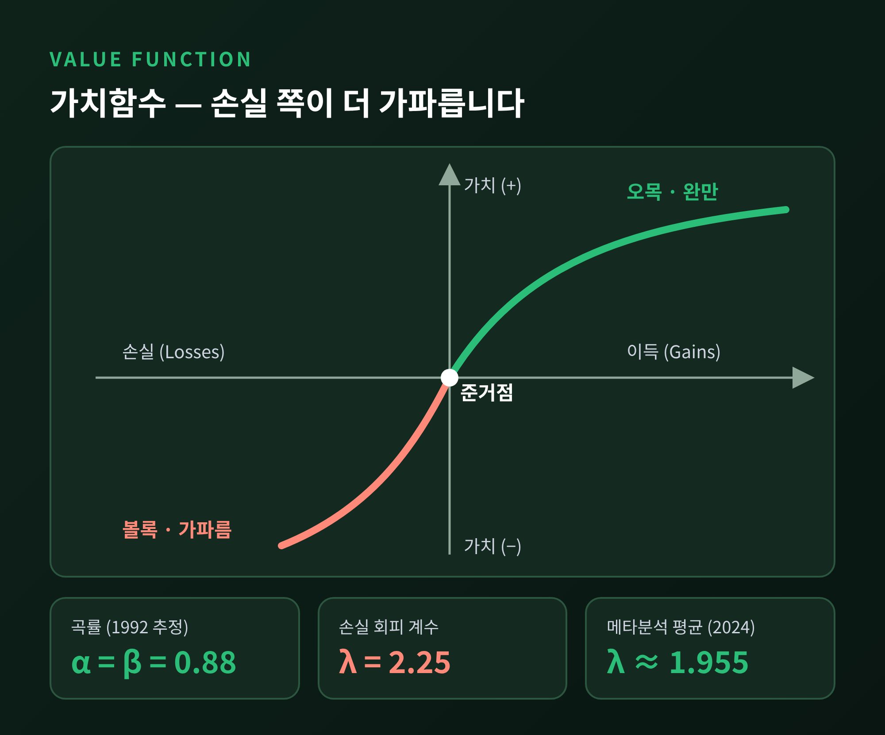
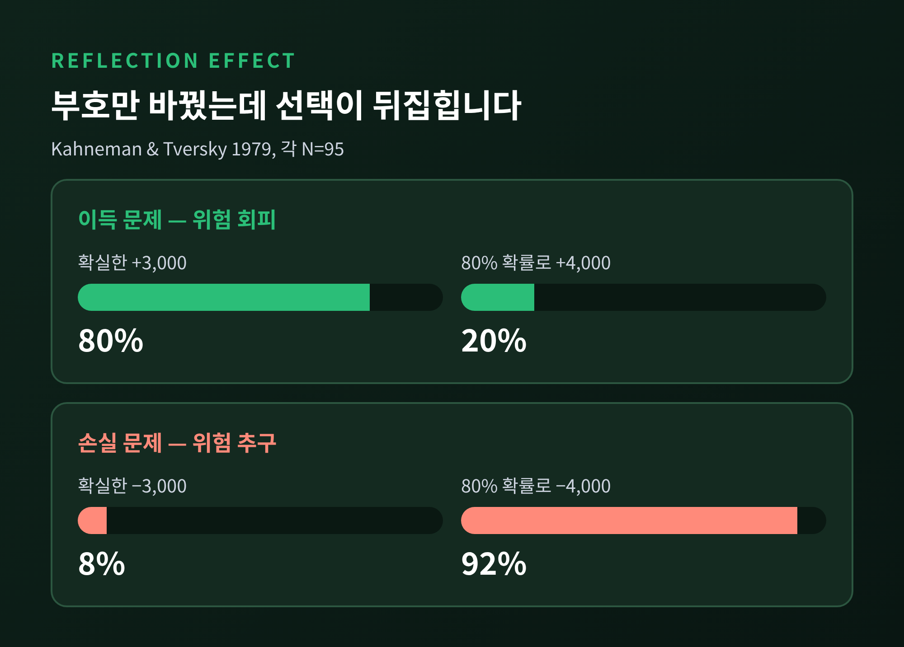
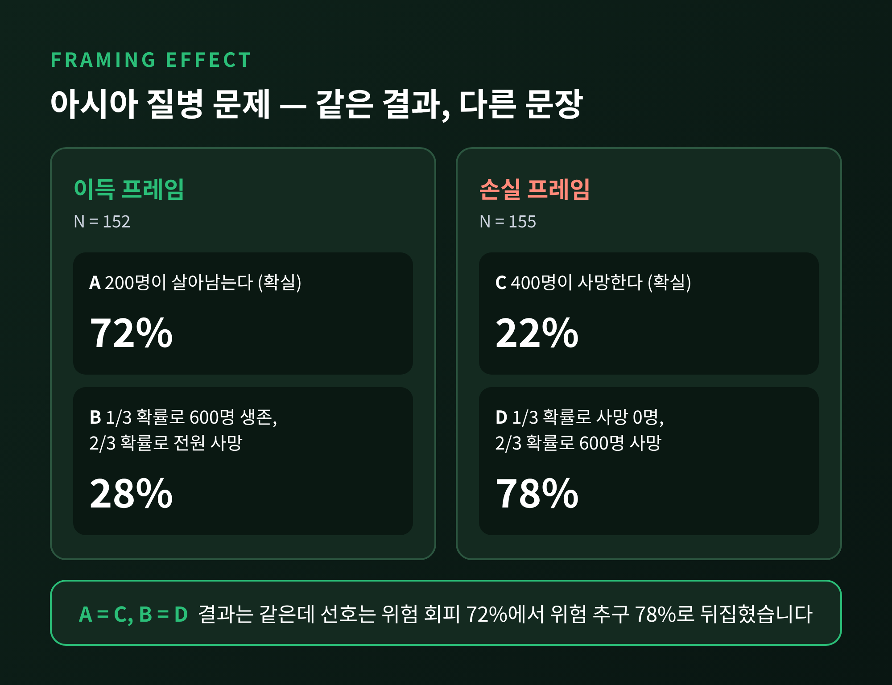
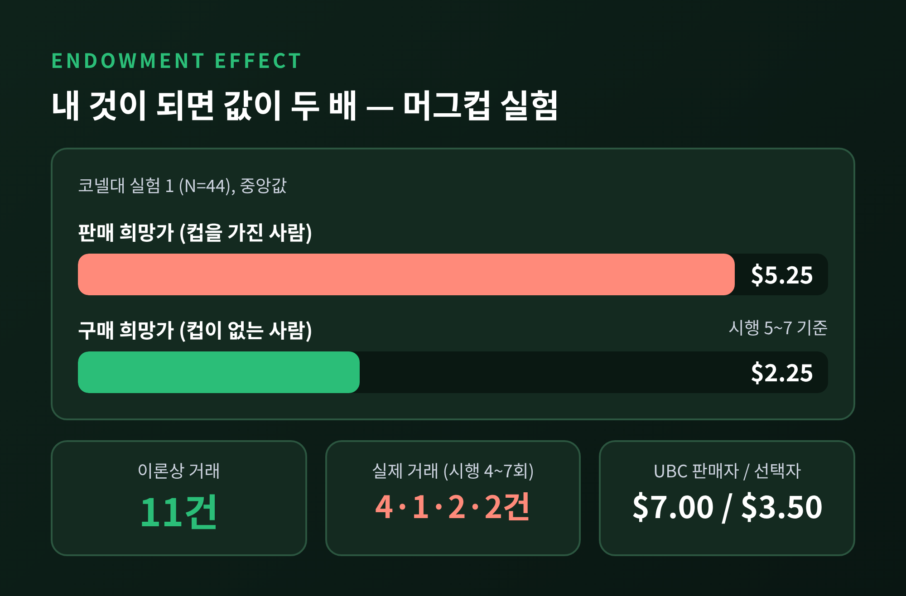
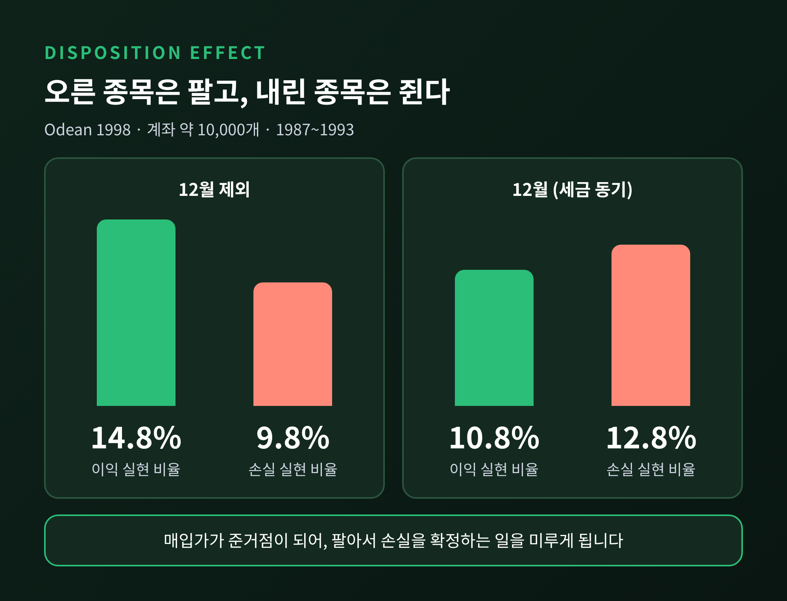

이번 글에서는 카너먼과 트버스키가 1979년에 내놓은 전망이론을 정리해 보겠습니다.
핵심은 두 가지입니다. 사람은 최종 재산이 아니라 기준선(준거점)과 비교해 이득과 손실을 느낀다는 것, 그리고 같은 크기라면 손실을 이득보다 훨씬 크게 느낀다는 것입니다.
이 두 가지가 왜 선택을 흔드는지, 실험과 투자 데이터로 차근차근 살펴보겠습니다.
경제학은 오랫동안 사람이 기대효용을 계산해 가장 이로운 쪽을 고른다고 가정했습니다.
그런데 1979년 3월, 아모스 트버스키와 대니얼 카너먼은 Econometrica에 논문 한 편을 실었습니다. 「Prospect Theory: An Analysis of Decision under Risk」입니다.
논문의 주장은 분명했습니다. 기대효용이론은 위험 앞에서의 실제 선택을 제대로 설명하지 못한다는 것입니다.
사람은 확실한 결과를, 단지 가능성이 높을 뿐인 결과보다 과하게 쳐줍니다. 이를 확실성 효과라고 부릅니다.
또 모든 선택지에 공통으로 들어 있는 요소는 건너뛰고 생각합니다. 이 때문에 같은 문제도 표현에 따라 답이 달라집니다.
이 이론은 2002년 노벨 경제학상으로 이어졌습니다. 스웨덴 왕립과학원은 카너먼에게 상을 주면서 심리학의 통찰을 경제과학에 통합한 공로를 꼽았습니다.
트버스키는 1996년에 세상을 떠났습니다. 보도자료는 카너먼이 고인이 된 트버스키와 함께 이 이론을 세웠다고 적어 두었습니다.
전망이론의 첫 번째 열쇠는 준거점입니다.
기대효용이론은 최종 재산이 얼마인가를 따집니다. 전망이론은 기준선에서 얼마나 올랐는가, 얼마나 내렸는가를 따집니다.
준거점은 보통 현재 자산 상태입니다. 다만 기대나 열망 수준에 따라 옮겨 가기도 합니다.

가치함수의 모양은 이렇습니다.
이득 구간에서는 오목합니다. 1만 원이 2만 원이 될 때의 기쁨이, 100만 원이 101만 원이 될 때보다 큽니다.
손실 구간에서는 볼록합니다. 그리고 손실 쪽 기울기가 이득 쪽보다 가파릅니다.
1992년 누적전망이론의 대표 추정치는 곡률 0.88, 손실 회피 계수 2.25입니다.
쉽게 말해 100만 원을 잃는 고통은, 200만 원 남짓 얻어야 간신히 달래진다는 뜻입니다. 논문도 "손실이 이득보다 크게 다가온다"고 적었습니다.
이 비대칭 때문에 동전 던지기식 공정한 내기는 매력이 떨어지고, 판돈이 클수록 거부감은 더 커집니다.
계수가 정말 2.25일까요. 이후 연구가 쌓이면서 더 조심스러운 숫자가 나왔습니다.
2024년 Journal of Economic Literature에 실린 메타분석은 논문 150편, 추정치 607개를 합쳐 평균 1.955를 얻었습니다. 95% 신뢰구간은 1.820에서 2.102입니다.
정확한 값은 연구마다 다르지만, 손실이 대략 두 배로 느껴진다는 큰 그림은 유지되는 셈입니다.
두 번째 열쇠는 위험에 대한 태도가 이득과 손실에서 정반대로 뒤집힌다는 사실입니다.
1979년 논문의 실험을 보면 선명합니다.

먼저 이득 문제입니다. 95명에게 확실한 3,000을 받을지, 80% 확률로 4,000을 받을지 물었습니다.
기대값은 도박이 3,200으로 더 높습니다. 그래도 80%가 확실한 3,000을 택했습니다.
이번에는 부호를 바꿉니다. 확실한 3,000 손실이냐, 80% 확률의 4,000 손실이냐입니다.
같은 95명 규모의 응답에서 92%가 도박을 골랐습니다. 확실한 손실을 고른 사람은 8%였습니다.
이득 앞에서는 움츠러들고 손실 앞에서는 승부를 거는 것입니다. 이를 반사 효과라고 합니다.
확실성 효과도 같은 맥락입니다. 확실한 2,400과 '2,500을 받을 확률 33%, 2,400을 받을 확률 66%, 아무것도 못 받을 확률 1%'를 견주자 72명 중 82%가 확실한 쪽을 택했습니다.
기대값은 도박이 약 2,409로 근소하게 높았는데도 말입니다.
한 가지 덧붙이자면, 아주 작은 확률은 반대로 부풀려 받아들입니다. 3,000을 0.2% 확률로 받는 쪽과 6,000을 0.1% 확률로 받는 쪽 중에서는 73%가 6,000을 택했습니다.
이 소확률 과대 평가가 보험과 복권이 함께 팔리는 이유를 설명해 줄 수 있습니다.
준거점이 이동하면 같은 결과가 이득으로도, 손실로도 읽힙니다.
1981년 Science에 실린 '아시아 질병 문제'가 대표적입니다. 600명이 사망할 것으로 예상되는 질병에 두 가지 대응책이 있습니다.

이득 프레임에서는 이렇게 묻습니다. 프로그램 A는 200명이 살아남습니다. 프로그램 B는 3분의 1 확률로 600명이 모두 살고, 3분의 2 확률로 아무도 못 삽니다.
152명 가운데 72%가 확실한 A를 골랐습니다.
손실 프레임에서는 문장만 바꿉니다. 프로그램 C는 400명이 사망합니다. 프로그램 D는 3분의 1 확률로 아무도 죽지 않고, 3분의 2 확률로 600명이 죽습니다.
155명 가운데 78%가 도박인 D를 골랐습니다.
C와 A는 같은 결과이고, D와 B도 같은 결과입니다. 바뀐 것은 말뿐입니다. 그런데 다수의 선택은 위험 회피에서 위험 추구로 돌아섰습니다.
논문은 이를 두고 준거점의 변화가 결과를 이득으로 볼지 손실로 볼지 결정한다고 설명했습니다.
비슷한 사례가 심리 회계입니다. 10달러 지폐를 잃어버린 사람 중 88%는 그래도 10달러짜리 입장권을 사겠다고 답했습니다.
입장권 자체를 잃어버린 사람은 46%만 다시 사겠다고 했습니다. 두 번째 표를 사면 같은 공연에 20달러를 쓴 것으로 장부에 적히기 때문이라는 해석입니다.
손실 회피는 실험실 밖의 거래에서도 확인됩니다.
카너먼, 크네치, 탈러가 1990년 Journal of Political Economy에 발표한 머그컵 실험입니다.

머그컵을 가진 참가자는 판매자가, 갖지 못한 참가자는 구매자가 되어 컵을 사고팔았습니다. 이론대로라면 거래가 활발히 일어나야 합니다.
코넬대 실험(44명)에서 기대 거래는 11건이었지만, 시행 4~7회의 실제 거래는 4건, 1건, 2건, 2건에 그쳤습니다.
중앙값은 판매자가 5.25달러, 구매자가 2.25~2.75달러였습니다. 판매자의 평가가 약 1.9~2.3배 높았던 셈입니다.
혹시 돈이 있고 없고의 차이가 아닐까 싶으실 수 있습니다. 연구진은 그 가능성도 따졌습니다.
UBC 실험(117명)에는 머그를 받지 않고 컵과 현금 중 하나를 고르는 '선택자'를 두었습니다. 선택자의 중앙값은 3.50달러였고, 판매자는 7.00달러, 구매자는 2.00달러였습니다.
선택자와 판매자는 처한 상황이 같은데도 평가가 두 배 가까이 달랐습니다. 이 거래에서 기대 19건 중 실제로 성사된 것은 1건이었습니다.
토큰으로 가치를 정해 둔 대조 시장은 이론 거래량의 약 91%를 채웠습니다. 거래 비용 탓이 아니라는 뜻입니다.
논문은 이를 소유물을 내놓기 싫어하는 손실 회피의 표현으로 보았고, 반복해도 격차가 줄지 않았다고 적었습니다. 흔히 소유 효과라 부르는 현상입니다.
주식 시장에서는 이 심리가 처분 효과로 나타납니다. 오른 종목은 서둘러 팔고, 내린 종목은 쥐고 있는 경향입니다.
매입가가 준거점이 되면 팔아서 손실을 확정하는 일이 고통스럽기 때문입니다.

테런스 오데안은 미국 할인 증권사 계좌 약 1만 개의 1987~1993년 거래를 살폈습니다.
12월을 제외하면 이익을 낸 종목을 판 비율이 약 14.8%, 손실 난 종목을 판 비율이 약 9.8%였습니다.
세금 때문에 손실을 털어내는 12월에는 10.8% 대 12.8%로 뒤집혔습니다. 이는 절세 동기가 습관을 이긴 순간이라는 해석과 맞아떨어집니다.
CFA 협회의 요약에 따르면 이 행동은 이후 성과로 정당화되지 않았고, 특히 과세 계좌에서 수익률을 깎았습니다.
예전엔 투자자의 '비합리'가 막연한 인상이었습니다. 지금은 계좌 기록이 그 방향을 보여 줍니다.
단, 이 현상을 전망이론 하나로만 설명하지는 않습니다. 용어를 만든 셰프린과 스태트먼은 심리 회계, 후회 회피, 자기 통제까지 네 요소가 함께 작용한다고 보았습니다.
전망이론에는 한계도 분명합니다.
정리해 두는 편이 공정하다고 생각합니다.
우선 손실 회피가 어디서나 같은 크기로 나타나지는 않습니다. 걸린 금액이 작으면 나타나지 않는다는 연구가 있습니다.
갈과 러커(2018)는 소유 효과나 현상 유지 편향이 손실 회피보다 심리적 관성으로 더 잘 설명된다고 주장했습니다.
예히암과 호크먼(2013)은 손실이 가중치보다 주의를 높이는 효과일 수 있다고 보았습니다.
시장 경험의 영향도 엇갈립니다. 존 리스트는 경험이 쌓이면 프레이밍 효과가 줄어든다고 보고했습니다. 반면 머그컵 실험에서는 반복해도 격차가 줄지 않았습니다.
이론적 지위에 대한 비판도 있습니다. 심리학자들은 전망이론이 행동을 기술할 뿐 왜 그런지 설명하지 못하며 감정 같은 요소를 빠뜨렸다고 지적합니다.
그럼에도 2020년 Nature Human Behaviour 연구는 전망이론의 실증 기반이 합리적 기준을 크게 넘어 재현된다고 결론지었습니다.
정리하면 이렇습니다.
전망이론은 사람이 어리석다고 말하지 않습니다. 사람의 판단이 일정한 방향으로 기울어 있다고 말합니다.
기준선이 어디냐에 따라 이득이 손실로 바뀌고, 손실 앞에서는 평소보다 큰 모험을 하게 된다는 것입니다.
그래서 결정을 앞두고 던질 질문은 단순합니다.
지금 내가 비교하는 기준선은 무엇인가. 같은 결과를 다른 문장으로 바꿔 읽어도 같은 선택을 하겠는가.
매입가가 아니라 오늘의 가치로 다시 판단하면 어떤 답이 나오는가.
결국 남는 것은 하나입니다. "문제는 계산이 아니라 기준선에 있다."
기준선을 다시 그어 보시겠냐고 물으신다면, 한 번쯤은 그렇게 해 보시라고 권하고 싶습니다.